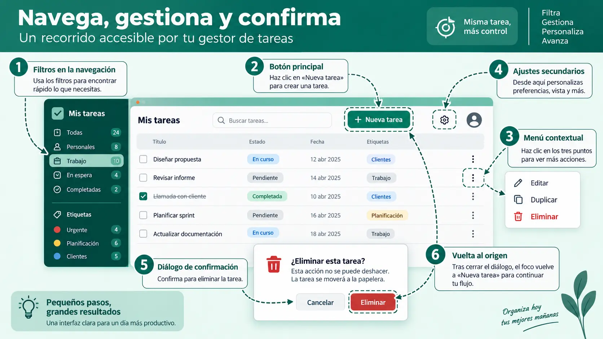

Contenido de la página
Objetivo docente
Construir menús coherentes, ubicar acciones por frecuencia y riesgo, y asegurar recorrido por teclado.
Contenido para explicar
La estructura refleja el modelo mental de la tarea. Las acciones frecuentes y seguras deben ser fáciles de encontrar; las destructivas no deben competir visualmente con la principal. Un menú no es un almacén de botones. Diálogos y ventanas requieren propósito, título, salida y gestión de foco.

Ejemplo básico resuelto
Distribución para el gestor:
- Barra superior: título, búsqueda y ayuda.
- Acción principal: «Nueva tarea».
- Menú de navegación: Todas, Pendientes y Completadas.
- Menú contextual de una tarea: editar, duplicar y eliminar.
- Atajos:
/para búsqueda yEscapepara cerrar diálogo, documentados y sin interferir con escritura.
HTML relevante generado por IA:
<nav aria-label="Estados de tareas">
<a href="#todas" aria-current="page">Todas</a>
<a href="#pendientes">Pendientes</a>
</nav>Se reconoce nav, su nombre accesible y aria-current; no se pide memorizar el fragmento.
RA4-PB04 · Arquitectura de acciones
Enunciado para publicar
Reorganiza diez acciones dadas en navegación, acción principal, menú contextual y diálogo. Crea dos tipos de menú y describe el recorrido completo con teclado.
Solución orientativa
Mostrar ejemplo de solución
«Nueva tarea» queda visible; filtros en navegación; «Editar/duplicar/eliminar» dependen de cada tarea; ajustes globales en menú secundario. Tab recorre controles operables en orden, Enter activa, Escape cierra el diálogo y devuelve el foco al disparador.